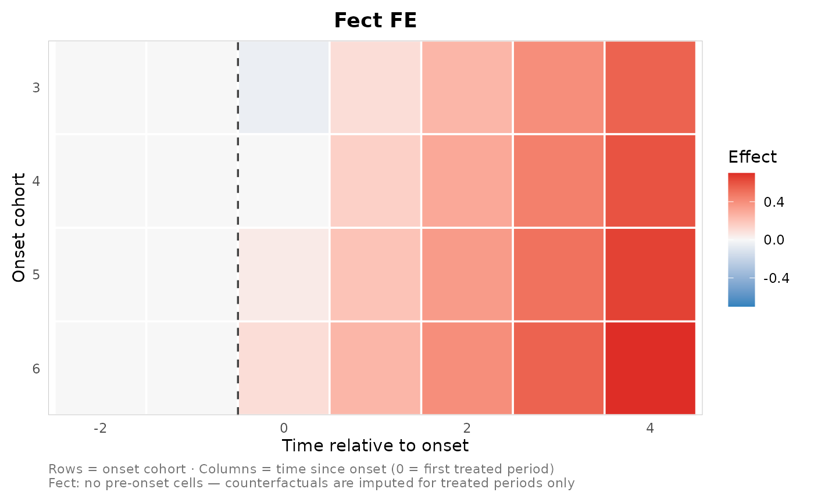
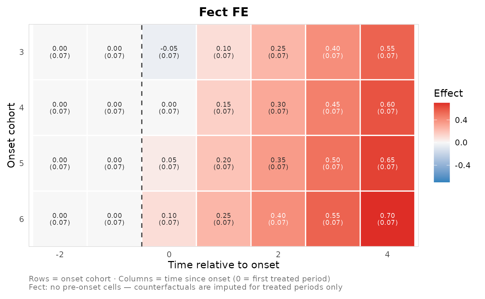

Plot a cohort-by-time effect matrix as a heatmap
Source:R/plot_effect_matrix.R
plot_effect_matrix.RdDraws one or more `nabs_effect_cell_tbl` objects as cohort (rows) by relative or calendar time (columns) heatmaps, with fill encoding the point estimate on a diverging scale centred at zero.
Usage
plot_effect_matrix(
...,
axis = c("event", "calendar"),
facet = TRUE,
show_estimates = FALSE,
show_se = FALSE,
digits = 2,
text_size = 2.6,
title = NULL,
caption = NULL,
low = "#3182BD",
mid = "#F7F7F7",
high = "#DE2D26",
limits = NULL,
na_color = "grey92",
xlab = NULL,
ylab = "Onset cohort",
legend_title = "Effect",
base_size = 11
)Arguments
- ...
One or more `nabs_effect_cell_tbl` objects (bare args or a single list), typically from [nabs_effect_cells()] or [as_nabs_effect_cells()].
- axis
`"event"` (default) puts `event_time` on the x axis; `"calendar"` uses `calendar_time`.
- facet
Logical; facet by `method` when more than one is present. Default `TRUE`.
- show_estimates
Logical; print the rounded estimate in each tile. Default `FALSE`.
- show_se
Logical; print the standard error in parentheses beneath the estimate (implies showing the estimate). Cells with `NA` SE show the estimate alone. Default `FALSE`.
- digits
Rounding for the in-tile estimate / SE labels. Default `2`.
- text_size
Font size for the in-tile labels. Default `2.6`.
- title
Plot title. `NULL` (default) auto-titles a single-method plot with its display label (the fect family shows as `"Fect FE"` / `"Fect IFE"` / `"Fect MC"`; `"DCDH"` is unchanged); faceted plots are left untitled (the strips name the methods). Pass a string to override, or `NA` to suppress.
- caption
A short gloss of the axes printed under the plot. `NULL` (default) auto-writes a one-line note (rows = onset cohort, columns = time since onset / calendar time), and appends a note that fect has no pre-onset cells whenever a fect-family panel is shown. Pass a string to override, or `NA` to suppress.
- low, mid, high
Diverging fill colours for negative / zero / positive estimates.
- limits
Optional length-2 numeric fill limits; `NULL` (default) makes the scale symmetric around zero from the data range.
- na_color
Fill for empty `(cohort, time)` cells. Default `"grey92"`.
- xlab, ylab, legend_title
Axis and legend labels.
- base_size
Base font size for `theme_minimal()`.
Details
The intended use is **one method per plot**: a single-method call gets the method as its title automatically. Passing several methods facets them with a shared scale, but that side-by-side view gets crowded quickly, so for careful comparison prefer separate per-method heatmaps.
Examples
raw <- expand.grid(cohort = 3:6, event_time = -2:4)
raw$estimate <- with(raw, ifelse(event_time < 0, 0,
0.15 * event_time + 0.05 * (cohort - 4)))
raw$std.error <- 0.07
cells <- as_nabs_effect_cells(raw, method = "FE", outcome = "y")
plot_effect_matrix(cells) # auto title "FE"

plot_effect_matrix(cells, show_estimates = TRUE, show_se = TRUE)
